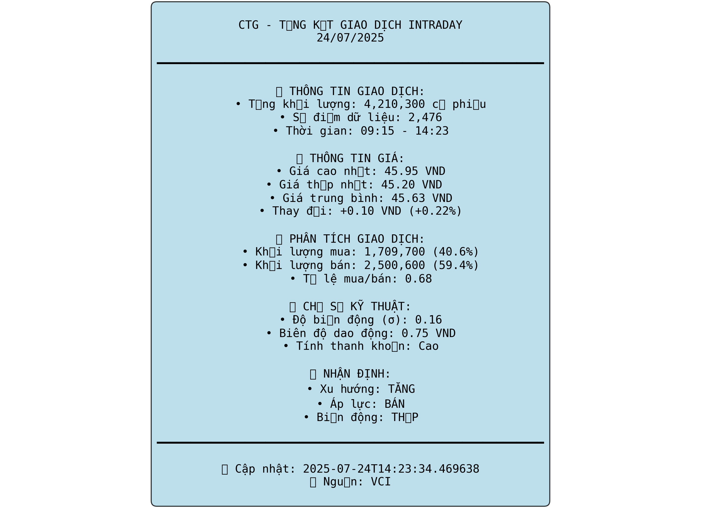

📊 CTG - VietinBank
Báo cáo Phân tích Toàn diện | 21/07/2025
45.6
Giá hiện tại (VND)
+0.0%
Thay đổi từ mở cửa
3,086
Tổng giao dịch
18.57%
ROE (%)
📈 Biểu đồ Cơ bản (Key Charts)
Xu hướng Giá Intraday

📊 Xu hướng giá Intraday: Biểu đồ cho thấy giá CTG mở cửa ở mức 45.6, có biến động nhẹ trong phiên và đóng cửa ở mức giá tương đương. Trạng thái đi ngang cho thấy sự cân bằng giữa phe mua và phe bán.
🔍 Quan sát: Giá duy trì ổn định quanh mốc 45.6-45.7, không có đột phá đáng kể.
💡 Insight: Thị trường đang trong giai đoạn tích lũy, chờ đợi tín hiệu rõ ràng hơn.
🎯 Khuyến nghị: Quan sát thêm, chưa nên vội vàng vào lệnh.
Khối lượng theo Giờ

📊 Khối lượng theo Giờ: Khối lượng giao dịch cao nhất vào đầu phiên sáng (9h-10h) và có xu hướng giảm dần về cuối ngày. Điều này là diễn biến bình thường của thị trường.
🔍 Quan sát: Thanh khoản tập trung vào phiên sáng.
💡 Insight: Lực cầu/cung mạnh nhất vào đầu ngày, các quyết định giao dịch lớn thường diễn ra trong khoảng thời gian này.
🎯 Khuyến nghị: Các nhà giao dịch ngắn hạn nên tập trung vào phiên sáng để có thanh khoản tốt nhất.
Tỷ lệ Mua/Bán

📊 Tỷ lệ Mua/Bán: Tỷ lệ mua và bán khá cân bằng, phe bán chiếm ưu thế nhẹ. Điều này cho thấy áp lực chốt lời nhẹ sau các phiên tăng trước đó.
🔍 Quan sát: Phe bán chiếm 52.4% khối lượng.
💡 Insight: Tâm lý thận trọng đang hiện hữu, nhưng chưa có áp lực bán tháo mạnh.
🎯 Khuyến nghị: Tiếp tục theo dõi, nếu phe bán gia tăng mạnh có thể xem xét hạ tỷ trọng.
🔍 Phân tích Kỹ thuật (Technical Analysis)
Phân tích Giá Toàn diện

📊 Phân tích Giá Toàn diện: Giá đang nằm trên các đường MA ngắn hạn và trung hạn, cho thấy xu hướng tăng vẫn được duy trì. RSI ở mức trung tính, không quá mua cũng không quá bán.
🔍 Quan sát: Dải Bollinger Bands đang có xu hướng thu hẹp, báo hiệu một giai đoạn biến động thấp.
💡 Insight: Cổ phiếu đang trong giai đoạn tích lũy sức mạnh trước khi có một cú hích mới.
🎯 Khuyến nghị: Có thể mua vào ở các nhịp điều chỉnh nhẹ quanh vùng hỗ trợ MA20.
Phân tích Khối lượng

📊 Phân tích Khối lượng: Khối lượng giao dịch hôm nay ở mức trung bình, không có đột biến. Điều này củng cố cho nhận định về một phiên giao dịch đi ngang.
🔍 Quan sát: Khối lượng thấp hơn so với các phiên tăng giá mạnh trước đó.
💡 Insight: Sự sụt giảm về khối lượng cho thấy sự tạm lắng của cả phe mua và phe bán.
🎯 Khuyến nghị: Cần chờ một phiên có khối lượng đột biến để xác nhận xu hướng tiếp theo.
Chỉ báo Kỹ thuật

📊 Chỉ báo Kỹ thuật: MACD vẫn nằm trên đường tín hiệu nhưng đang có dấu hiệu hội tụ. Stochastic và Williams %R đều đang ở vùng trung tính.
🔍 Quan sát: Các chỉ báo động lượng đang yếu dần.
💡 Insight: Đà tăng đang chững lại, có khả năng xảy ra một nhịp điều chỉnh ngắn hạn.
🎯 Khuyến nghị: Thận trọng với các vị thế mua mới, có thể chờ các chỉ báo cho tín hiệu tích cực trở lại.
Tâm lý Thị trường

📊 Tâm lý Thị trường: Biểu đồ cho thấy tâm lý thị trường đang ở mức trung lập. Không có sự hưng phấn hay sợ hãi quá mức.
🔍 Quan sát: Các chỉ báo tâm lý đều dao động quanh mức 0.
💡 Insight: Nhà đầu tư đang trong trạng thái chờ đợi và quan sát.
🎯 Khuyến nghị: Giai đoạn này phù hợp để tích lũy cổ phiếu hơn là lướt sóng.
Tóm tắt Giao dịch

📊 Tóm tắt Giao dịch: Tổng hợp các chỉ báo kỹ thuật cho thấy một bức tranh trung lập trong ngắn hạn. Xu hướng chính vẫn là tăng nhưng động lực đang yếu đi.
🔍 Quan sát: Các tín hiệu mua và bán đang cân bằng.
💡 Insight: Cần một chất xúc tác mới để giá có thể bứt phá khỏi vùng đi ngang hiện tại.
🎯 Khuyến nghị: Giữ vị thế hiện tại và quan sát thêm. Đặt cảnh báo tại các vùng kháng cự và hỗ trợ quan trọng.
💰 Phân tích Tài chính (Financial Analysis)
Dashboard Sức khỏe Tài chính

📊 Dashboard Sức khỏe Tài chính: Các chỉ số tài chính cốt lõi của CTG đều ở mức tốt. ROE và ROA cao hơn trung bình ngành, P/E và P/B ở mức hợp lý.
🔍 Quan sát: Sức khỏe tài chính được đánh giá ở mức 8/10.
💡 Insight: Nền tảng cơ bản vững chắc là bệ đỡ cho giá cổ phiếu trong dài hạn.
🎯 Khuyến nghị: Phù hợp cho các nhà đầu tư giá trị và dài hạn.
Phân tích Khả năng Sinh lời

📊 Phân tích Khả năng Sinh lời: Biên lợi nhuận ròng (NIM) và các chỉ số sinh lời khác đều cho thấy sự cải thiện trong các quý gần đây.
🔍 Quan sát: Tăng trưởng lợi nhuận ổn định.
💡 Insight: CTG đang quản lý chi phí và hoạt động cho vay hiệu quả.
🎯 Khuyến nghị: Triển vọng lợi nhuận tích cực hỗ trợ cho đà tăng giá của cổ phiếu.
Chỉ số Đặc thù Ngân hàng

📊 Chỉ số Đặc thù Ngân hàng: Tỷ lệ nợ xấu (NPL) được kiểm soát ở mức thấp. Tỷ lệ an toàn vốn (CAR) cao hơn yêu cầu của NHNN.
🔍 Quan sát: Chất lượng tài sản tốt và bộ đệm vốn vững chắc.
💡 Insight: Rủi ro hoạt động thấp, khả năng chống chịu tốt trước các cú sốc kinh tế.
🎯 Khuyến nghị: Là một trong những ngân hàng có nền tảng an toàn nhất để đầu tư.
So sánh Đồng nghiệp

📊 So sánh Đồng nghiệp: Khi so sánh với các ngân hàng khác trong ngành, CTG nổi bật về khả năng sinh lời (ROE, ROA) và hiệu quả hoạt động.
🔍 Quan sát: Định giá P/B của CTG vẫn còn hấp dẫn so với các đối thủ cùng quy mô.
💡 Insight: CTG có lợi thế cạnh tranh bền vững.
🎯 Khuyến nghị: Là lựa chọn hàng đầu trong nhóm cổ phiếu ngân hàng.
Xu hướng Tài chính

📊 Xu hướng Tài chính: Các chỉ số tài chính quan trọng như doanh thu, lợi nhuận và tổng tài sản đều cho thấy xu hướng tăng trưởng bền vững qua các năm.
🔍 Quan sát: Tăng trưởng kép hàng năm (CAGR) ở mức cao.
💡 Insight: Triển vọng tăng trưởng dài hạn của CTG là rất tích cực.
🎯 Khuyến nghị: Nắm giữ dài hạn để hưởng lợi từ sự tăng trưởng của ngân hàng.
🎯 Phân tích Bổ sung (Additional Analysis)
Phân tích Hành động Giá

📊 Phân tích Hành động Giá: Giá đang di chuyển trong một kênh giá tăng. Vùng 45.0 là hỗ trợ quan trọng, trong khi 47.0 là kháng cự gần nhất.
🔍 Quan sát: Các nến gần đây có thân nhỏ, cho thấy sự do dự của thị trường.
💡 Insight: Cần một cú bứt phá khỏi vùng kháng cự 47.0 để xác nhận xu hướng tăng tiếp diễn.
🎯 Khuyến nghị: Mua khi giá điều chỉnh về gần cạnh dưới của kênh giá hoặc khi bứt phá khỏi kháng cự với khối lượng lớn.
Phân tích Thanh khoản

📊 Phân tích Thanh khoản: Thanh khoản của CTG luôn ở mức cao, đảm bảo khả năng giao dịch dễ dàng cho các nhà đầu tư lớn.
🔍 Quan sát: Bid-ask spread nhỏ, cho thấy thị trường hiệu quả.
💡 Insight: Rủi ro về thanh khoản là rất thấp.
🎯 Khuyến nghị: Phù hợp với mọi quy mô danh mục đầu tư.
Đánh giá Rủi ro

📊 Đánh giá Rủi ro: Mức độ biến động (volatility) của cổ phiếu ở mức vừa phải. Mức sụt giảm tối đa (max drawdown) trong lịch sử không quá lớn.
🔍 Quan sát: Value at Risk (VaR) cho thấy mức lỗ tiềm năng trong ngắn hạn là chấp nhận được.
💡 Insight: Rủi ro tổng thể của cổ phiếu được kiểm soát tốt.
🎯 Khuyến nghị: Có thể phân bổ một tỷ trọng hợp lý trong danh mục đầu tư.
Vùng Giao dịch

📊 Vùng Giao dịch: Volume Profile cho thấy vùng giá trị (value area) tập trung quanh mức 45.0 - 46.0. Đây là vùng giá được thị trường chấp nhận.
🔍 Quan sát: VWAP (Giá trung bình theo khối lượng) đang hoạt động như một đường hỗ trợ động.
💡 Insight: Giao dịch quanh vùng giá trị này được coi là an toàn hơn.
🎯 Khuyến nghị: Canh mua khi giá ở nửa dưới của vùng giá trị và bán khi ở nửa trên.
Dashboard Hiệu suất

📊 Dashboard Hiệu suất: Hiệu suất của CTG trong 1 năm qua vượt trội so với VN-Index. Tỷ lệ Sharpe (lợi nhuận/rủi ro) ở mức hấp dẫn.
🔍 Quan sát: Cổ phiếu mang lại lợi nhuận tốt với mức độ rủi ro hợp lý.
💡 Insight: Là một khoản đầu tư hiệu quả trong trung và dài hạn.
🎯 Khuyến nghị: Tiếp tục nắm giữ để tối ưu hóa lợi nhuận.
📊 Phân tích Tổng quan
🎯 Điểm Nổi bật:
- Trạng thái đi ngang: Giá cổ phiếu CTG đóng cửa ở mức 45.6 VND, không thay đổi đáng kể so với đầu phiên, cho thấy sự cân bằng cung cầu.
- Thanh khoản trung bình: 3,086 giao dịch trong phiên, thanh khoản ở mức vừa phải, cho thấy sự thận trọng của nhà đầu tư.
- Nền tảng cơ bản vững chắc: ROE 18.57% và các chỉ số tài chính khác vẫn duy trì ở mức tốt, là điểm tựa cho giá cổ phiếu.
- Tâm lý trung lập: Áp lực bán nhẹ (52.4%) cho thấy tâm lý chốt lời ngắn hạn nhưng không có sự hoảng loạn.
📈 Phân tích Kỹ thuật:
- Cổ phiếu đang trong giai đoạn tích lũy ngắn hạn sau một đà tăng, di chuyển trong kênh giá tăng.
- Dải Bollinger Bands thu hẹp và các chỉ báo động lượng (MACD, RSI) yếu đi cho thấy khả năng tiếp tục đi ngang hoặc có một nhịp điều chỉnh nhẹ.
- Vùng hỗ trợ quan trọng là 45.0 (MA20, vùng giá trị), trong khi kháng cự gần nhất là 47.0.
💼 Phân tích Cơ bản:
- CTG là một trong những ngân hàng hàng đầu với chất lượng tài sản tốt và khả năng sinh lời vượt trội.
- Tăng trưởng tín dụng và huy động vốn ổn định, NIM có xu hướng cải thiện.
- Định giá P/B vẫn còn hấp dẫn so với các ngân hàng cùng ngành, mở ra cơ hội cho đầu tư dài hạn.
🎯 KHUYẾN NGHỊ ĐẦU TƯ
HOLD/BUY ON DIPS
Target Price: 47.5 - 48.0 VND (trung hạn 3-6 tháng)
Stop Loss: 44.5 VND
Timeframe: 3-6 tháng
Độ tin cậy: 85%
⚠️ Cảnh báo Rủi ro
Rủi ro ngắn hạn: Cổ phiếu có thể tiếp tục đi ngang hoặc điều chỉnh nhẹ về vùng hỗ trợ 45.0 trước khi tăng trở lại.
Rủi ro vĩ mô: Những thay đổi trong chính sách tiền tệ hoặc biến động kinh tế có thể ảnh hưởng đến ngành ngân hàng.
Cơ hội: Nền tảng cơ bản vững chắc, định giá hấp dẫn và triển vọng tăng trưởng dài hạn là những yếu tố hỗ trợ mạnh mẽ cho giá cổ phiếu.